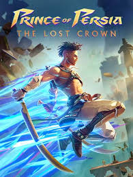
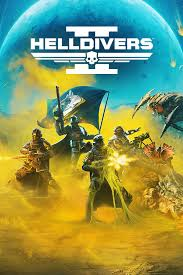
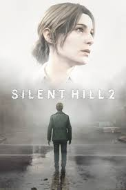
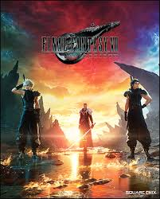

Prince of Persia: The Lost Crown

Release Date: 2024
Platforms: PS5, Xbox Series X|S, PS4, Xbox One, PC
Rating: ★★★★☆ (4/5)
Overview: Prince of Persia: The Lost Crown marks the franchise's exciting return, offering a blend of classic platforming, fast-paced combat, and a fresh storyline. Developed by Ubisoft, it brings the series into a new era with stunning visuals and innovative mechanics.
Gameplay: The game shines with its fluid parkour mechanics, allowing players to scale walls, leap across gaps, and navigate through elaborate environments. Combat is fast-paced and tactical, incorporating combos and defensive maneuvers, while the new "time manipulation" mechanic adds an exciting layer of strategy to both combat and puzzles.
Story: The Prince embarks on a journey to recover a powerful crown, delving into Persian folklore with intriguing twists. The narrative is engaging but doesn't quite reach the emotional depth of The Sands of Time.
Visuals & Sound: The game boasts gorgeous environments inspired by Persian landscapes, with smooth animations and impressive lighting effects. The soundtrack blends orchestral and regional instruments, heightening the adventure's intensity.
Verdict: The Lost Crown revitalizes the Prince of Persia franchise with its engaging parkour and combat mechanics, offering a visually captivating experience. While the story can be predictable and the combat repetitive, it remains an enjoyable action-adventure for both new players and longtime fans.
Pros:
- Fluid platforming and dynamic combat
- Stunning world design
- Exciting time manipulation mechanic
Cons:
- Predictable story
- Combat may feel repetitive over time
Final Rating: A thrilling return to form, though it could use a bit more narrative depth. A must-play for platforming and action fans.
|
Helldivers 2

Release Date: 2024
Platforms: PS5, PC
Rating: ★★★★☆ (4/5)
Overview: Helldivers 2 delivers an action-packed, cooperative twin-stick shooter experience set in a chaotic, war-torn universe. The sequel builds on the original's successful formula with improved visuals, deeper combat mechanics, and even more intense, large-scale battles.
Gameplay: The game shines in its emphasis on teamwork, offering a challenging experience where strategy and coordination are key. Players must work together to complete objectives while battling fierce enemies across varied environments. The controls are responsive, and the gunplay is satisfying, though the difficulty can feel punishing at times.
Visuals & Sound: The graphics are a significant upgrade, with detailed environments and intense combat animations. The sound design, including the dynamic soundtrack, complements the high-energy action and adds to the overall immersion.
Verdict: Helldivers 2 successfully expands on the original, offering thrilling cooperative gameplay and challenging combat. While its difficulty may deter some players, it’s a must-play for fans of action-packed shooters and cooperative experiences.
Pros:
- Engaging cooperative gameplay
- Improved visuals and combat mechanics
- Intense, large-scale battles
Cons:
- High difficulty may frustrate some players
Final Rating: An exciting sequel for fans of the genre, with a focus on teamwork and intense action.
|
Silent Hill 2

Release Date: 2024
Platforms: PS5, PC
Rating: ★★★★★ (5/5)
Overview: The Silent Hill 2 remake breathes new life into the iconic horror classic, delivering a visually stunning and psychologically terrifying experience. With updated graphics, enhanced audio, and refined gameplay mechanics, this remake captures the eerie atmosphere of the original while modernizing it for a new generation of players.
Gameplay: The core mechanics remain faithful to the original, focusing on psychological horror, unsettling environments, and complex puzzles. The haunting narrative of James Sunderland’s search for his deceased wife is as impactful as ever, with refined controls and updated combat that feel more intuitive. The tense atmosphere and disturbing visuals add to the unease.
Visuals & Sound: The remake excels in its visual overhaul, offering breathtaking, atmospheric environments. The sound design is equally remarkable, with unsettling soundscapes and a chilling soundtrack that amplifies the tension and horror.
Verdict: The Silent Hill 2 remake is a masterful reimagining of one of the greatest horror games ever made. It’s a must-play for fans of the original and newcomers alike, offering an unforgettable and truly terrifying experience.
Pros:
- Stunning visual and audio overhaul
- Atmospheric and unsettling horror
- Faithful to the original with refined gameplay
Cons:
- Some minor pacing issues for modern players
Final Rating: A flawless remake that captures the essence of Silent Hill 2, making it as terrifying and emotionally impactful as ever.
|
Final Fantasy 7

Release Date: 1997 (Original), 2020 (Remake)
Platforms: PlayStation, PC, Xbox, Switch, PS5
Rating: ★★★★★ (5/5)
Overview: Final Fantasy VII remains one of the most influential RPGs ever made. With its unforgettable story, iconic characters like Cloud Strife and Sephiroth, and groundbreaking gameplay for its time, it defined an era of gaming. The 2020 Remake brought the classic to modern audiences with stunning visuals and expanded story elements.
Gameplay: The original featured a turn-based combat system mixed with strategic planning and character progression, offering deep customization. The Remake introduces real-time combat with tactical pauses, blending action and strategy. Both versions shine in their own ways, but the Remake adds more depth to the narrative and combat without losing the essence of the original.
Story & Characters: The heart of Final Fantasy VII lies in its gripping narrative of rebellion, loss, and identity. From Cloud’s journey of self-discovery to the looming threat of Sephiroth, the story captivates with emotional depth and unforgettable moments. The diverse cast, from Tifa and Aerith to Barret and Red XIII, makes the experience even more memorable.
Visuals & Sound: The Remake’s visuals are stunning, bringing the world of Midgar and beyond to life in breathtaking detail. The original, while outdated by today’s standards, was revolutionary for its time. Both games feature a beautiful, orchestral soundtrack that elevates every moment, from quiet introspection to epic battles.
Verdict: Final Fantasy VII is a timeless masterpiece that holds up to this day. Whether playing the original or the Remake, the game offers a rich, emotional experience that’s still one of the best RPGs of all time.
Pros:
- Rich, emotionally resonant story
- Iconic characters and world
- Deep, engaging gameplay (both original and Remake)
Cons:
- The Remake’s episodic format may not suit everyone
Final Rating: A must-play for any RPG fan, Final Fantasy VII continues to stand as one of the greatest video games ever made.
|